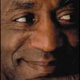
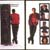
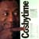
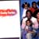
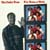
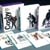
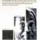

Creating Demand for a
Highly Priced Product
Background
The syndication of The Cosby Show required a two-phased campaign with the first being from Viacom and directed to local television programmers and the trade, and the second from the local station operators and directed to consumers.
Trade Campaign
For the trade, the challenge was to sell the show for a price higher than a station could recoup in direct advertising revenues. Our strategy was to remind local stations of the overall benefits that The Cosby Show had provided for the NBC network and then to emphasize why Cosby programming would be a powerful force in syndication as well. More subtle was the suggestion that Cosby could be dangerous in competitor's, rather than their own, hands. The all encompassing theme became "The Cosby Factor."
Consumer Campaign
The consumer campaign needed to differentiate The Cosby Show in syndication from the network show on primetime. In addition, Viacom wanted to fulfill their promise to the show's buyers that they would work with them to make the show successful in local markets. Thus, the campaign needed to serve the affiliates as well as attract consumers.
One theme, "Five Nights a Week," was used with Bill Cosby as the spokesperson for a multilevel awareness, launch, generic, and episodic campaign. Included were national and local print, television and radio commercials and outdoor, all marketing support materials, including a marketing how-to brochure and promotional "box" with press materials, ad slicks, storyboards, premiums, etc. The campaign was created to be modular so that stations could use these elements together with or separately from their own promotional efforts.
Results
The Cosby Show was the most successful syndication in television history, selling for in excess of $550 million to more than 200 stations.